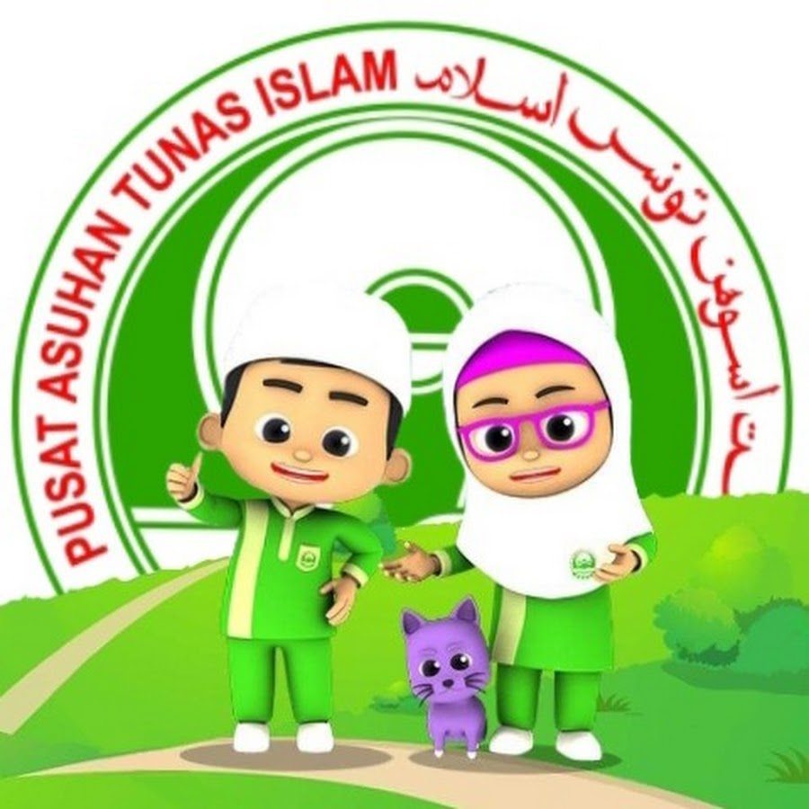
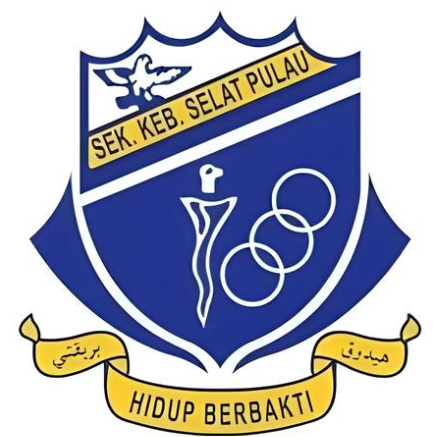

Preschool
My educational journey began at Pasti Nurul Iman when I was 5 to 6 years old. This preschool experience provided me with an excellent foundation for learning, where I was introduced to the basics of education, including the alphabet and the art of forming simple sentences. Each day was filled with joy, curiosity, and a sense of accomplishment as I eagerly absorbed new knowledge and participated in engaging activities. These early years helped shape my creativity and introduced me to values such as sharing, teamwork, and building friendships that remain important to me even today.
Primary School
I attended Sekolah Kebangsaan Selat Pulau from Standard 1 to Standard 6. During these formative years, I built a solid academic foundation and developed key skills that helped shape my character and work ethic. My primary school teachers were encouraging and always found creative ways to keep lessons exciting. I participated in various school activities such as sports events, art competitions, and the school's English public speaking, which allowed me to explore and show my talents. These years were great in shaping my love for learning and my desire to achieve academically.
High School
My secondary education occurred at Sekolah Menengah Agama Al-Abbasiah, where I spent 5 years from Form 1 to Form 5. During these years, I began to understand the importance of discipline, responsibility, and time management. I was actively involved in extracurricular activities like debate, sports, and volunteering. High school was challenging because I had to focus on two syllabus which are academic and deeniyah, but it pushed me to develop stronger study habits and a more focused approach to my education. It also deepened my interest in subjects like English, History, and Islamic Studies, which later influenced my choice of university program.
University
Currently, I am pursuing my higher education at UiTM Kedah. The university has been an exciting and enriching experience, offering a dynamic learning environment where I have the chance to engage with various subjects related to my field of study. I am part of a diverse student body, which has enhanced my perspective on different cultures and academic disciplines. Aside from academics, I actively participate in university clubs and volunteer programs. The opportunities to develop both personally and professionally have been invaluable. I look forward to completing my studies and using the knowledge gained here to contribute positively to society.
Visit UiTM Official Website